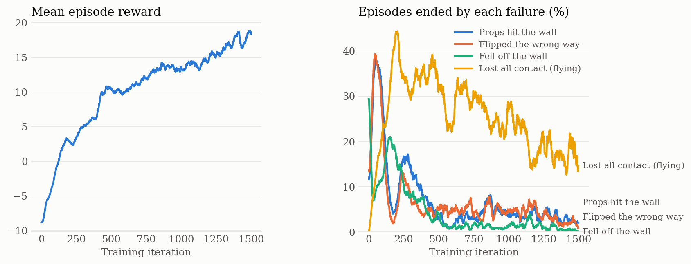

Milestones
Milestone 1 Update (Nov 22)
MVP and Stretch Goals
Our MVP is unchanged: a policy in simulation that, given a target vector, drives the robot to match it, and that flips the robot from the floor onto a wall. Our stretch goal is still to run the trained policy on our PIE robot (sim2real). What changed is the order we are working in. We started on the floor-to-wall flip before target-vector following, because the flip is the hardest and least certain part of the project, and we wanted to find its problems early. That decision paid off, since most of what we learned this milestone (below) came from the flip.
Planned vs. Actual
| Milestone 1 goal from our proposal | Status | Notes |
|---|---|---|
| Isaac Sim and Isaac Lab working on the Unity cluster | Partly, changed | We use Isaac Lab 3.0 on its Newton physics engine instead of Isaac Sim (explained below). We ran into errors setting up on the Unity cluster, so all training so far has been on a laptop GPU, where a full run takes about 11 minutes. The Unity setup and job scripts are written and ready. |
| URDF of the robot exported and converted to USD | Done, changed | Instead of exporting from CAD, we generate a simplified URDF from a script with the real robot's dimensions (box chassis, sphere wheels, disc propellers). It is easier to keep in sync with the hardware as it changes. |
| Propeller thrust applied as forces | Done | Thrust is a force along each tilting propeller's axis, with a 50 ms spin-up lag and counter-rotating reaction torque. |
| Floor and wall added to the simulation | Done | Each robot gets its own floor and a 3 m tall wall, and 4096 robots are simulated in parallel. |
| Network inputs and outputs defined | Done, changed | Inputs are the IMU (gyro, gravity direction, accelerometer) and the two IR distances over the last 4 time steps. Instead of raw gimbal angles and RPM, each output is the force a propeller should apply, which the simulator turns into a tilt angle and a thrust. |
| RSL-RL set up and checked with a random-action agent | Done, ahead | We went past the check to full PPO training runs, and started the reward function, which was planned for Milestone 2. |
Set-Up Status
Isaac Lab 3.0 and RSL-RL are working, running on Isaac Lab's Newton physics engine instead of Isaac Sim (explained below). A full training run of 1500 PPO iterations with 4096 simulated robots takes about 11 minutes on a laptop GPU. We ran into issues getting set up on the Unity cluster, so for now all training has been done on that laptop GPU, but the setup and job scripts for Unity are written and ready. The physical robot is being built in parallel for PIE, so the simulator uses placeholder values for thrust (15.7 N per propeller), mass (2 kg), and IR sensor range (3 to 80 cm) until we can measure the real ones.
Simulator: Newton Instead of Isaac Sim
We planned to use Isaac Sim, but ended up running Isaac Lab on its Newton physics backend and not using Isaac Sim at all. Isaac Lab 3.0 no longer requires Isaac Sim: the same task code can run on Newton, an open-source GPU physics engine developed by NVIDIA, Google DeepMind and Disney Research. We chose it for four reasons:
- We realized that we don't need what Isaac Sim adds. Isaac Sim's main extras are photorealistic rendering, camera sensors and the Omniverse editor. Our policy's inputs are the IMU, the IR sensors, the propeller tilt and thrust, none of which need rendering. We compute the IR readings directly by casting rays from the sensor positions to the floor and wall.
- The installation process was a lot simpler than Isaac Sim. Newton installs as ordinary Python packages, with no Isaac Sim or Omniverse runtime. On the Unity cluster this means no containers.
- Isaac Sim also needs more and RTX GPUs. Newton runs on any recent NVIDIA GPU, including Unity's A100s and RTX 2080 Tis.
- We found out that it was relatively fast enough to train on a laptop. Thousands of robots are simulated in parallel on one GPU, so a full training run takes minutes instead of hours.
The trade-off is that we lose Isaac Sim's realistic visuals and editor. We use Newton's viewer and our own side-view animations to see what the policy does. Our task can also run on PhysX, Isaac Sim's physics engine, by changing one setting. We haven't tested that yet, but plan to use it later to check that a trained policy also works under a second physics engine before trying sim-to-real.
Unity Cluster
The setup and job scripts for Unity are written and ready in the cluster/ folder of our repository:
setup_unity.sh: one-time setup. It installs uv, checks out Isaac Lab at the exact version we tested, and builds the Python environment in our group's/workstorage.check_gpu.sbatch: a short test job that checks the GPU and NVIDIA driver and runs our physics sanity tests on a compute node.train.sbatch: the PPO training job. It requests only GPUs compatible with our PyTorch build (RTX 2080 Ti or newer). It resumes from its latest checkpoint if Unity's preemptible queue interrupts it, and it can launch several runs at once (for example, different random seeds) as a job array.sync_to_unity.shandfetch_logs.sh: copy our code to Unity and bring training logs and checkpoints back to our laptops.
Once Unity access is working, we will use it to run many training experiments in parallel (reward variants, seeds and robot parameters).
Major Components
| Component | Status | Current issue |
|---|---|---|
| Robot model: chassis, four free wheels, two tilting propellers | Done | Dimensions and mass are placeholders until the PIE robot is weighed and measured. |
| Thrust model and floor/wall scene | Done | None known. |
| IR distance sensor model | Fixed, re-testing | Had a bug that made both sensors read 3 cm whenever the robot was level (see Reflection). Now checked against known distances. |
| PPO training with RSL-RL | Working | None known. |
| Reward: staying on the wall | Working | Robots that start on the wall stay on it with almost no wobble, but they climb past the top of the wall instead of stopping. |
| Reward: floor-to-wall flip | Troubleshooting | About 1 in 5 robots pitch up past 80 degrees, then fall instead of landing on the wall. Being retrained with the fixed IR sensors. |
| Following a target vector on the floor | Not started | Postponed to put the flip first. |
| Unity cluster setup and job scripts | Tested, but got errors | Setup on Unity failed, so all training so far has run on a laptop GPU. The scripts are written and ready. |
Results
Each number below comes from 512 simulated robots each running one 12-second episode with a policy trained for 1500 PPO iterations. The robot always faces a wall about 0.3 to 1.2 m away; "floor" episodes start on the floor and "wall" episodes start partway up the wall.
| First reward | Latest run | |
|---|---|---|
| Wall start: still on the wall at the end | 0% | 100% |
| Wall start: wobble while on the wall | 0.37 rad/s | 0.05 rad/s |
| Floor start: flips the wrong way (props hit the wall) | 15% | 0% |
| Floor start: pitches up past 80 degrees | not measured | 21% |
| Floor start: lands on the wall | 0.4% | 0% |

Training curves for our latest completed run (rolling mean over 25 iterations). The policy learns to stop hitting the wall with its props, flipping the wrong way, and falling off, but still often loses contact with both surfaces. This run was trained before we fixed the IR sensor bug.
Reflection
The robot found the safest way to score. With our first reward, 84% of robots that started on the floor never attempted the flip and simply ran out the clock; in our videos they drive up to the wall and stop. Approaching the wall earned reward, but trying to flip risked a crash penalty, so parking was the best strategy available. We learned that a reward has to make the behavior we want the easiest one to find, not just a possible one.
Our success check could not tell right-side-up from upside-down. We counted the robot as "on the wall" when all four wheels touched it, but that is also true if the robot is upside down. We changed the check to also require the nose to point up, and added a penalty for reaching the wall nose-down.
The physics pushed the robot the wrong way. 15% of floor attempts ended with the propellers hitting the wall. Because the propellers sit 7 cm above the wheel axles, pushing forward into the wall tips the nose down toward it. A correct flip needs the front propeller to push up, which nothing in the reward encouraged. Rewarding nose-up pitch near the wall brought this down to 0.2%.
Fixing the crashes revealed a harder problem. Once the robot stopped crashing, it still almost never completed a flip, because it rarely gets there by chance and so has nothing to learn from. We pivoted in two ways: some training episodes now start partway through the flip so the robot can practise finishing it, and the reward is now staged to match the maneuver. First the robot is rewarded for driving straight at the wall, with both IR sensors reading the same distance and the chassis level. Then, once the IR distance is about zero, it is rewarded for each degree its IMU pitch rises from 0 to 90 degrees.
A simulator bug hid behind good-looking numbers. A training metric said 100% of floor robots reached the wall's "IR about zero" point from the very first iteration, before the robot had learned anything. Tracing it showed a bug in the IR sensor model: whenever the robot was level, both sensors reported 3 cm, the closest reading possible, no matter how far the wall was. So every policy we had trained could not actually see the wall. We fixed the bug and now check the sensors against known distances before training (a robot 0.5 m from the wall now reads 0.33 m, as expected, since the sensors are 18 cm ahead of its center).
What this means for our goal setting. Our Milestone 1 goals were all about building the simulator, and we did not plan time for checking that the simulator was right or for debugging the reward. Those turned out to be most of the work. For Milestone 2 we have written verification steps into the goals and planned a fallback for each one.
Risks to the MVP
Our biggest risk is that the policy still does not learn to finish the flip, even with working IR sensors. Our second risk is that the simulation will not match the real robot, because the thrust, mass, and IR values are placeholders and our robot model is simplified. Our third risk is time, since target-vector following has not been started and needs its own reward and training.
Goals for Milestone 2 (Dec 7)
| Goal | Difficulty | If it isn't met |
|---|---|---|
| Floor-to-wall flip works from floor starts in at least half of simulated attempts, retrained with the fixed IR sensors | Ambitious | First, start more episodes partway through the flip and give the flip a larger share of the reward. If it still fails by Dec 1, train the flip as its own policy that starts at the wall, and show the full maneuver as two policies chained together. |
| Robots on the wall stop at the commanded height instead of climbing past the top | Realistic | End the episode with a penalty above the target height, so climbing too far is never worth it. |
| Following a target vector on the floor (MVP part 1) | Realistic | Start with straight-line driving at a commanded speed, then add turning if time allows. |
| Measured propeller thrust, mass, and IR range from the PIE robot in the simulator | Realistic if the hardware is ready | Randomize those values over a plausible range during training, so the policy does not depend on their exact values. |
| Robot model built from a URDF exported from our CAD model | Realistic | Keep the script-generated URDF and update its dimensions and masses to match the CAD model. |
| Teacher–student training: a teacher policy that sees the full simulator state, distilled into a student that sees only the IMU and IR sensors (which cannot directly measure height or sliding on the wall), with the student's success rate reported from floor and wall starts | Ambitious | Report the teacher's results and how far the student falls short, and give the student a longer sensor history so it can infer more of the missing state. |
| Unity cluster working for all teammates, so we can run experiments in parallel | Realistic | Keep training on our laptops, where one run takes about 11 minutes, and run experiments one after another. |
| Every sensor and reward change checked with a scripted test before training | Realistic | Not optional: this is how we found the IR bug. |
| Training curves, evaluation tables, and videos for each behavior | Realistic | None needed: these come out of every training run. |
If we fall behind overall, we will keep the flip as our top priority, since it is the core of the project, and narrow vector following to straight-line driving.